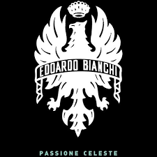

ITALIAN CREATIVITY SINCE 1885 (BIANCHI)
BIANCHI IS THE MOST HISTORIC AND PRESTIGIOUS BRAND OF BICYCLES. OUR HERITAGE, OVER 130 YEARS STRONG, STARTED IN MILAN IN 1885 WITH EDOARDO BIANCHI, CANNOT BE EQUALLED IN THE CYCLING WORLD. OUR POSITIONING EMBODIES THE BEST OF WHAT ITALY CAN OFFER TO THE WORLD: A COMMITMENT TO BUILD PRODUCTS AS ARTISANS “A REGOLA D’ARTE”, AS WELL AS DISTINGUISHING DESIGN, STYLE AND TASTE.
Our mission
Trek started in a small Wisconsin barn in 1976, but our founders always saw something bigger. Forty-four years later, we're on a mission to make our world a better place to live and ride. We build only products we love, provide incredible hospitality to our customers, and change the world by getting more people on bikes.
ROAD
ROAD
CYCLOCROSS
Crafted for good times in the dirt. Trail bikes, race xc bikes, gravity bikes or anti-gravity e-mountain bikes.
MTB
No Other Way.
Our roots run deep. The mountains around us define who we are. They’re the reason we’re here. Why there’s a little dirt in everything we do. We’ve been obsessed for over half a century. Riding, connecting, creating. Extracting innovation from imagination. Making every ride better than the last. Finding inspiration one trail at a time. It’s not always pretty, but that’s sort of the point. Everything we do, takes everything we have. There’s No Other Way.
MTB
CROSS
COUNTRY